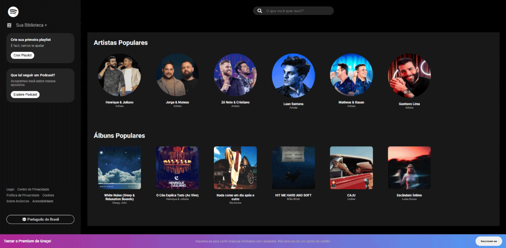

Pedro Lubacheski
Engenheiro de Software
Engenheiro de Software
Sempre tive interesse por tecnologia e por entender como as coisas funcionam. Já tive experiência profissional na área e, atualmente, estou direcionando minha carreira para desenvolvimento web e análise de dados, estudando e desenvolvendo projetos próprios para evoluir minhas habilidades. Busco uma oportunidade para colocar em prática o que venho aprendendo e crescer junto com uma equipe de tecnologia.

Projeto de interface interativa desenvolvido com HTML, CSS e JavaScript, com foco em animações e manipulação do DOM. A aplicação consiste em um slider dinâmico de produtos, onde o usuário pode navegar entre os itens utilizando botões de navegação (next/prev). A lógica em JavaScript controla a troca de estados ativos, enquanto o CSS é responsável por toda a estilização e animações suaves dos elementos na tela.

Landing page de uma cafeteria desenvolvida com HTML e CSS, com foco em interface moderna, organização de código e experiência do usuário. O projeto simula uma aplicação real, com seções como menu, avaliações e contato, utilizando boas práticas de layout com Flexbox e Grid.

Recriação da interface do Spotify com HTML, CSS e JavaScript, destacando layout moderno, interatividade e renderização dinâmica de conteúdos através da manipulação do DOM.